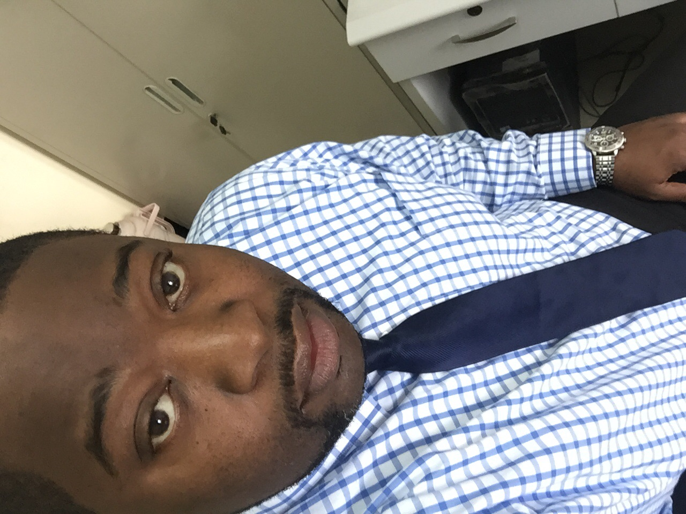

About Me
An accomplished Industrial Engineer with a plethora of successful projects under his belt, I have decided to take my skills into a new field. As a person passionate about end results and showing value add in everything I do, I am confident in my skills and my ability to stand out amongst the field. I graduated Southern Polytechnic State University in 2007 with a degree in Industrial Engineering. My first position out of college was an a Process Engineer for Stratasystems Inc. I worked there to establish quality management systems and protocol. I established multiple cost saving and process improvement initiative and even built an OSHA approved gantry crane. My next position was as an Engineering auditor for ManTech corporation. This role saw me move to Washington D.C and work within one of the largest DOJ contractors in the country. My keen eye for process planning and control helped my see process metric data that improved overall project metrics and productivity. Now I've decided to take my drive for perfection and creativity and put them together in the field of software development and coding. A hobby that has for a long time been a source of fun and creative outlet, I look to be a force creativity and excellence!!